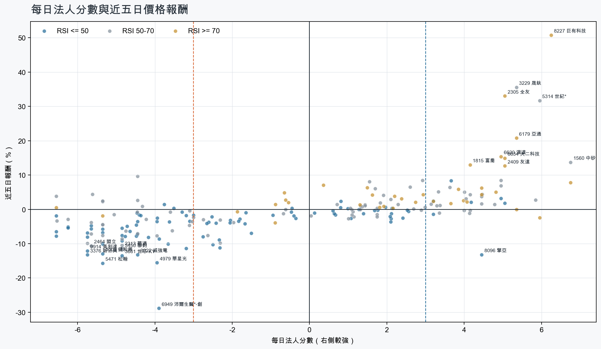
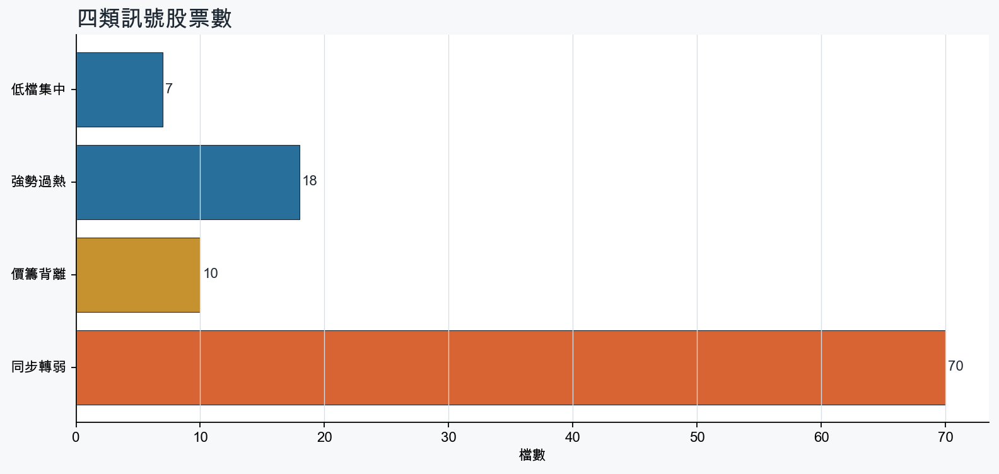
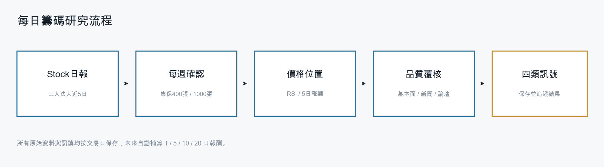
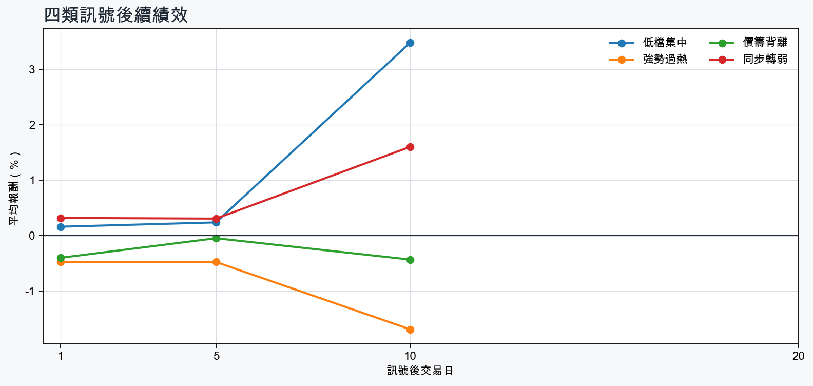

市場情緒偏空
近5日法人合計-1,569,748 張
篩選池上漲比例39.7%
籌碼好 / RSI低7 檔
籌碼差 / 價跌15 檔



EPS × PE VALUATION
法人常用的相對估值
顯示保守、基準與樂觀估值帶，不把單一數字包裝成精準目標價。
最新累計 EPS 依季數年化 × 同產業有效 P/E 的 Q25／中位數／Q75。排除本公司、非正 P/E，並以 1.5×IQR 排除離群值。估值帶是公開資料篩選值，不是法人目標價；未使用分析師預估 EPS。
MOOD × MONEY
情緒與籌碼雷達
熱度代表被討論程度；情緒分與法人方向分開計算。熱門不等於適合追價，樣本不足也不硬判多空。
| 股票 | 情緒 | 討論熱度 | 情緒 × 籌碼 | 情緒 × 基本面 |
|---|---|---|---|---|
| 3037 欣興低檔集中 | 偏多 +26.2信心 100 | 1006 篇 / 964 留言 / 3 則新聞 | 情籌共振法人分 +3.7 | 基本面與情緒共振基本面分 +3.6 |
| 3045 台灣大強勢過熱 | 情緒高漲 +90.7信心 100 | 891 篇 / 455 留言 / 3 則新聞 | 情籌共振法人分 +4.0 | 基本面與情緒共振基本面分 +2.4 |
| 6669 緯穎同步轉弱 | 情緒高漲 +42.3信心 100 | 834 篇 / 285 留言 / 3 則新聞 | 熱門但法人撤退法人分 -5.8 | 基本面與情緒共振基本面分 +3.0 |
| 1815 富喬強勢過熱 | 情緒高漲 +36.9信心 95 | 723 篇 / 118 留言 / 2 則新聞 | 情籌共振法人分 +4.2 | 基本面與情緒共振基本面分 +3.6 |
| 3661 世芯-KY同步轉弱 | 中性分歧 -10.8信心 100 | 662 篇 / 77 留言 / 3 則新聞 | 高熱分歧法人分 -4.8 | 基本面與情緒分歧基本面分 +1.8 |
| 2344 華邦電低檔集中 | 偏多 +18.4信心 92 | 632 篇 / 56 留言 / 3 則新聞 | 情籌混合法人分 +3.2 | 基本面與情緒分歧基本面分 +3.6 |
| 6770 力積電低檔集中 | 情緒高漲 +35.4信心 87 | 631 篇 / 61 留言 / 3 則新聞 | 情籌共振法人分 +5.0 | 基本面與情緒共振基本面分 +3.6 |
| 2609 陽明低檔集中 | 中性分歧 +12.3信心 72 | 571 篇 / 35 留言 / 3 則新聞 | 情籌混合法人分 +4.2 | 基本面與情緒分歧基本面分 +2.4 |
| 2492 華新科價籌背離 | 偏多 +18.9信心 73 | 561 篇 / 31 留言 / 3 則新聞 | 情籌混合法人分 -5.6 | 基本面與情緒分歧基本面分 +3.0 |
| 5388 中磊同步轉弱 | 偏多 +21.4信心 60 | 551 篇 / 31 留言 / 2 則新聞 | 熱門但法人撤退法人分 -6.2 | 基本面與情緒共振基本面分 +3.0 |
| 4979 華星光同步轉弱 | 偏多 +26.9信心 61 | 511 篇 / 18 留言 / 3 則新聞 | 熱門但法人撤退法人分 -4.0 | 基本面與情緒共振基本面分 +3.6 |
| 3693 營邦強勢過熱 | 偏空 -28.1信心 28 | 431 篇 / 13 留言 / 0 則新聞 | 法人布局、市場悲觀法人分 +5.3 | 基本面佳、情緒悲觀基本面分 +3.6 |
01
籌碼好 / RSI低
優先研究基本面；法人續買且價格止穩時，才適合分批觀察。
| 股票 / 確認狀態 | 每日法人分 | 浦男式近似 | 法人加速度 | RSI / 相對強弱 | 量價確認 | 融資融券 | 每週集保確認 | 基本面 | EPS × 同業 P/E 估值 | 情緒 / 情籌 | 近期消息 | 論壇討論 |
|---|---|---|---|---|---|---|---|---|---|---|---|---|
| 2609 陽明可研究 · 100 分籌碼與價格確認，可列研究清單 | +4.2法人 +28,163 張 / 3 天 | 命中 · 91站上月線；中期均線偏多；法人籌碼偏多；留意量能尚未確認、動能位置非最佳 | +33,020 張近3日 +30,540 / 連續 +1 日 | 36.5相對大盤 +14.3% | 量比 0.87確認分 +5.8價格、量能與籌碼未見明顯弱項 | -%融資 - 張 / 融券 - 張 | +4.39 pp1000張 +4.80 pp | 單月營收年增 +34.6%；累計營收年增 +5.8%；2026 Q2 累計 EPS 2.052026 Q2 累計營益率 7.6%來源：公開資訊觀測站 | 基準 NT$ 44.85估值帶 37.35–58.83現價 59.40 · 高於估值帶 · 距基準 -24.5%2026 Q2 累計 EPS 2.05 → 年化 4.10航運業同業 P/E 9.11／10.94／14.35 · n=26 · 信心中等以 Q2 累計 EPS 年化，不等同分析師全年預估來源：TWSE／TPEx 每日本益比 | 中性分歧 +12.3熱度 57 / 信心 72情籌混合 | 陽明8月營收216億元、年增56%！法人點出3大隱憂：股價還能追嗎？ | 下班經濟學 | 財經風傳媒 · 09/11熱門股／8月營收報喜！陽明抗跌一度站回60元萬海、長榮齊揚| 產經非凡新聞台 · 09/11 | [情報] 2609 陽明 8月營收 216.11億 月增年增PTT Stock · 09-09 · 35 留言 |
| 2605 新興可研究 · 99 分籌碼與價格確認，可列研究清單 | +5.0法人 +6,244 張 / 4 天 | 命中 · 95站上月線；中期均線偏多；法人籌碼偏多；留意量能尚未確認 | +346 張近3日 +2,776 / 連續 +1 日 | 49.3相對大盤 +12.0% | 量比 0.75確認分 +4.5價格、量能與籌碼未見明顯弱項 | -%融資 - 張 / 融券 - 張 | -0.80 pp1000張 -1.83 pp | 單月營收年增 +36.3%；累計營收年增 +35.1%；2026 Q2 累計 EPS 3.67仍需觀察下一期財報延續性來源：公開資訊觀測站 | 基準 NT$ 82.58估值帶 68.48–105.3現價 36.50 · 低於估值帶 · 距基準 +126.2%2026 Q2 累計 EPS 3.67 → 年化 7.34航運業同業 P/E 9.33／11.25／14.35 · n=26 · 信心中等以 Q2 累計 EPS 年化，不等同分析師全年預估來源：TWSE／TPEx 每日本益比 | 中性分歧 +0.0熱度 28 / 信心 20情籌混合 | 海岬型船換約，新興8月營收雙增/後市亦看好- 新聞MoneyDJ · 09/11【11:34 即時新聞】新興(2605)股價小幅走揚至37.05元，受惠散裝與油輪運價展望偏多＋月季線多頭結構搭配法人評價低估支撐CMoney投資網誌 · 09/11 | 近期沒有明確提及本股的論壇樣本 |
| 3037 欣興等待確認 · 77 分籌碼有訊號，但價格尚未確認 | +3.7法人 +7,439 張 / 4 天 | 接近 · 61中期均線偏多；法人籌碼偏多；法人買盤加速；留意未站月線、明顯弱於大盤 | +3,761 張近3日 +4,628 / 連續 +1 日 | 40.1相對大盤 -5.0% | 量比 0.44確認分 -0.1收盤跌破20日線；近20日弱於大盤；成交量不足 | -%融資 - 張 / 融券 - 張 | +2.29 pp1000張 +1.78 pp | 單月營收年增 +43.7%；累計營收年增 +30.8%；2026 Q2 累計 EPS 11.70仍需觀察下一期財報延續性來源：公開資訊觀測站 | 基準 NT$ 570.5估值帶 408.6–896.7現價 977.0 · 高於估值帶 · 距基準 -41.6%2026 Q2 累計 EPS 11.70 → 年化 23.40電子零組件同業 P/E 17.46／24.38／38.32 · n=147 · 信心中等以 Q2 累計 EPS 年化，不等同分析師全年預估來源：TWSE／TPEx 每日本益比 | 偏多 +26.2熱度 100 / 信心 100情籌共振 | 欣興千元失而復得？杜金龍揭「跌深也不搶」理由：不只看基本面- 上市櫃旺得富理財網 · 09/113037 欣興- 今日0910日三大法人買賣- 股市爆料同學會CMoney · 09/11 | [情報] 脆上有人爆料欣興的細節PTT Stock · 09-07 · 654 留言[新聞] 欣興重返千元俱樂部 中高階載板市場需求PTT Stock · 09-09 · 111 留言 |
| 6770 力積電等待確認 · 70 分籌碼有訊號，但價格尚未確認 | +5.0法人 +116,256 張 / 3 天 | 接近 · 73站上月線；中期均線偏多；法人籌碼偏多；留意法人買盤未加速、明顯弱於大盤 | -99,477 張近3日 -82 / 連續 -1 日 | 49.8相對大盤 -10.6% | 量比 0.87確認分 -2.2近20日弱於大盤；法人買盤減速 | -%融資 - 張 / 融券 - 張 | +1.37 pp1000張 +1.25 pp | 單月營收年增 +70.5%；累計營收年增 +42.7%；2026 Q2 累計 EPS 4.08仍需觀察下一期財報延續性來源：公開資訊觀測站 | 基準 NT$ 208.3估值帶 142.0–361.1現價 70.70 · 低於估值帶 · 距基準 +194.7%2026 Q2 累計 EPS 4.08 → 年化 8.16半導體同業 P/E 17.40／25.53／44.25 · n=147 · 信心較低以 Q2 累計 EPS 年化，不等同分析師全年預估；年化 EPS 為交易所近四季 EPS 的 2.72 倍，需保守解讀來源：TWSE／TPEx 每日本益比 | 情緒高漲 +35.4熱度 63 / 信心 87情籌共振 | 力積電8月營收70.09億元 年增76.19%Yahoo新聞 · 09/11力積電8月營收年增逾7成！網嗨「量價齊揚」：盤這麼久該噴了UDN · 09/11 | [情報] 6770 力積電 115年8月營收PTT Stock · 09-10 · 61 留言 |
| 3702 大聯大等待確認 · 66 分籌碼有訊號，但價格尚未確認 | +3.2法人 +5,467 張 / 5 天 | 接近 · 66站上月線；法人籌碼偏多；法人買盤加速；留意中期均線未翻多、明顯弱於大盤 | +3,470 張近3日 +4,832 / 連續 +6 日 | 39.9相對大盤 -8.2% | 量比 0.72確認分 +0.220日線低於60日線；近20日弱於大盤 | -%融資 - 張 / 融券 - 張 | -2.93 pp1000張 -3.07 pp | 單月營收年增 +90.8%；累計營收年增 +59.9%；2026 Q2 累計 EPS 8.422026 Q2 累計營益率 2.6%來源：公開資訊觀測站 | 基準 NT$ 205.1估值帶 166.6–391.2現價 106.5 · 低於估值帶 · 距基準 +92.6%2026 Q2 累計 EPS 8.42 → 年化 16.84電子通路同業 P/E 9.89／12.18／23.23 · n=31 · 信心中等以 Q2 累計 EPS 年化，不等同分析師全年預估來源：TWSE／TPEx 每日本益比 | 樣本不足 +0.0熱度 0 / 信心 0情緒樣本不足 | 近期沒有通過股票語境篩選的新聞 | 近期沒有明確提及本股的論壇樣本 |
| 8096 擎亞等待確認 · 65 分籌碼有訊號，但價格尚未確認 | +4.5法人 +1,534 張 / 3 天 | 未命中 · 55法人籌碼偏多；法人買盤加速；買超具延續性；留意未站月線、中期均線未翻多 | +671 張近3日 +1,351 / 連續 -1 日 | 24.8相對大盤 -23.0% | 量比 1.21確認分 -0.4收盤跌破20日線；20日線低於60日線；近20日弱於大盤 | -6.3%融資 -1,455 張 / 融券 +152 張 | -6.78 pp1000張 -7.76 pp | 單月營收年增 +269.6%；累計營收年增 +80.7%；2026 Q2 累計 EPS 3.312026 Q2 累計營益率 2.2%來源：公開資訊觀測站 | 基準 NT$ 77.98估值帶 65.14–136.1現價 90.70 · 估值帶內 · 距基準 -14.0%2026 Q2 累計 EPS 3.31 → 年化 6.62電子通路同業 P/E 9.84／11.78／20.56 · n=31 · 信心中等以 Q2 累計 EPS 年化，不等同分析師全年預估來源：TWSE／TPEx 每日本益比 | 樣本不足 +0.0熱度 0 / 信心 0情緒樣本不足 | 近期沒有通過股票語境篩選的新聞 | 近期沒有明確提及本股的論壇樣本 |
| 2344 華邦電等待確認 · 37 分籌碼有訊號，但價格尚未確認 | +3.2法人 +46,615 張 / 2 天 | 未命中 · 53中期均線偏多；法人籌碼偏多；基本面有支撐；留意未站月線、法人買盤未加速 | -246,712 張近3日 -101,032 / 連續 -3 日 | 46.0相對大盤 -7.4% | 量比 0.56確認分 -6.2收盤跌破20日線；近20日弱於大盤；成交量不足；法人買盤減速 | -%融資 - 張 / 融券 - 張 | -1.99 pp1000張 -2.60 pp | 單月營收年增 +291.5%；累計營收年增 +161.0%；2026 Q2 累計 EPS 7.65仍需觀察下一期財報延續性來源：公開資訊觀測站 | 基準 NT$ 390.6估值帶 266.2–677.0現價 171.5 · 低於估值帶 · 距基準 +127.8%2026 Q2 累計 EPS 7.65 → 年化 15.30半導體同業 P/E 17.40／25.53／44.25 · n=147 · 信心中等以 Q2 累計 EPS 年化，不等同分析師全年預估來源：TWSE／TPEx 每日本益比 | 偏多 +18.4熱度 63 / 信心 92情籌混合 | 2344 華邦電- 各位別慌！說說你們心裡的目標價- 股市爆料同學會CMoney · 09/11主動式ETF砍掉的華邦電(2344)，隔天就跌4.46%CMoney投資網誌 · 09/11 | [新聞] 記憶體缺貨惡化！華邦電漲逾半根停板PTT Stock · 09-08 · 34 留言[新聞] 南亞科、華邦電繼續飆？高盛曝光大利多PTT Stock · 09-07 · 22 留言 |
02
籌碼好 / RSI高
趨勢強但不追價，等待量縮、RSI降溫或回測支撐。
| 股票 / 確認狀態 | 每日法人分 | 浦男式近似 | 法人加速度 | RSI / 相對強弱 | 量價確認 | 融資融券 | 每週集保確認 | 基本面 | EPS × 同業 P/E 估值 | 情緒 / 情籌 | 近期消息 | 論壇討論 |
|---|---|---|---|---|---|---|---|---|---|---|---|---|
| 3374 精材等待拉回 · 100 分等拉回，不追價 | +6.8法人 +3,114 張 / 5 天 | 接近 · 83站上月線；中期均線偏多；法人籌碼偏多；留意法人買盤未加速、RSI過熱 | -413 張近3日 +1,903 / 連續 +10 日 | 81.6相對大盤 +41.8% | 量比 1.09確認分 +2.6法人買盤減速 | +1.6%融資 +472 張 / 融券 +8 張 | +3.86 pp1000張 +2.41 pp | 單月營收年增 +36.7%；累計營收年增 +33.2%；2026 Q2 累計 EPS 2.88仍需觀察下一期財報延續性來源：公開資訊觀測站 | 基準 NT$ 144.5估值帶 100.2–252.0現價 463.5 · 高於估值帶 · 距基準 -68.8%2026 Q2 累計 EPS 2.88 → 年化 5.76半導體同業 P/E 17.40／25.09／43.75 · n=147 · 信心中等以 Q2 累計 EPS 年化，不等同分析師全年預估來源：TWSE／TPEx 每日本益比 | 中性分歧 +0.0熱度 28 / 信心 20情籌混合 | 3374 精材 - 尾盤殺這什麼意思😮💨 - 股市爆料同學會CMoney · 09/11外資大舉避險近900億引發台股大跌 755 點，市場聚焦今晚美國 CPI 數據登場， 投本比策略: 光頡、富喬、精材｜ 2026.09.14 #台股 盤前解析｜今天 Shot 這盤｜豐雲學堂直播sinotrade.com.tw · 09/11 | 近期沒有明確提及本股的論壇樣本 |
| 2455 全新等待拉回 · 96 分等拉回，不追價 | +6.0法人 +3,835 張 / 5 天 | 接近 · 79站上月線；中期均線偏多；法人籌碼偏多；留意法人買盤未加速、量能異常 | -1,135 張近3日 +1,548 / 連續 +8 日 | 75.7相對大盤 +34.9% | 量比 0.14確認分 +1.1成交量不足；法人買盤減速 | -%融資 - 張 / 融券 - 張 | +5.28 pp1000張 +2.51 pp | 單月營收年增 +45.1%；累計營收年增 +30.5%；2026 Q2 累計 EPS 2.20仍需觀察下一期財報延續性來源：公開資訊觀測站 | 基準 NT$ 92.44估值帶 64.06–162.4現價 515.0 · 高於估值帶 · 距基準 -82.0%2026 Q2 累計 EPS 2.20 → 年化 4.40通信網路同業 P/E 14.56／21.01／36.91 · n=59 · 信心中等以 Q2 累計 EPS 年化，不等同分析師全年預估來源：TWSE／TPEx 每日本益比 | 中性分歧 +0.0熱度 33 / 信心 30情籌混合 | 2700個零件更新！台灣賓士全新S-Class上市四車型499萬起拚銷售攀峰- 產業工商時報 · 09/11Lexus全新「剛剛好的最便宜SUV」上市！雖然比頂級車款「便宜54萬日圓」，卻採用「Lexus首見內裝」！「專屬設計外觀」也超帥氣！「UX300h Shining Essence」成為注目焦點！carnews.com · 09/11 | 近期沒有明確提及本股的論壇樣本 |
| 3693 營邦等待拉回 · 96 分等拉回，不追價 | +5.3法人 +1,678 張 / 4 天 | 命中 · 84站上月線；中期均線偏多；法人籌碼偏多；留意法人買盤未加速、量能尚未確認 | -348 張近3日 +743 / 連續 +1 日 | 77.8相對大盤 +22.9% | 量比 0.87確認分 +1.8法人買盤減速 | +1.3%融資 +55 張 / 融券 -14 張 | +5.23 pp1000張 +2.90 pp | 單月營收年增 +171.0%；累計營收年增 +25.3%；2026 Q2 累計 EPS 8.66仍需觀察下一期財報延續性來源：公開資訊觀測站 | 基準 NT$ 266.2估值帶 213.2–385.9現價 663.0 · 高於估值帶 · 距基準 -59.9%2026 Q2 累計 EPS 8.66 → 年化 17.32電腦及週邊同業 P/E 12.31／15.37／22.28 · n=77 · 信心中等以 Q2 累計 EPS 年化，不等同分析師全年預估來源：TWSE／TPEx 每日本益比 | 偏空 -28.1熱度 43 / 信心 28法人布局、市場悲觀 | 近期沒有通過股票語境篩選的新聞 | [情報] 3693 營邦 115年8月營收PTT Stock · 09-07 · 13 留言 |
| 1815 富喬等待拉回 · 93 分等拉回，不追價 | +4.2法人 +9,319 張 / 3 天 | 接近 · 79站上月線；中期均線偏多；法人籌碼偏多；留意法人買盤未加速、量能異常 | -46,136 張近3日 -17,761 / 連續 +1 日 | 72.1相對大盤 +45.5% | 量比 0.54確認分 +1.8成交量不足；法人買盤減速 | -2.7%融資 -1,189 張 / 融券 +182 張 | +22.20 pp1000張 +21.31 pp | 單月營收年增 +79.2%；累計營收年增 +51.2%；2026 Q2 累計 EPS 2.24仍需觀察下一期財報延續性來源：公開資訊觀測站 | 基準 NT$ 114.2估值帶 79.43–203.6現價 127.5 · 估值帶內 · 距基準 -10.5%2026 Q2 累計 EPS 2.24 → 年化 4.48電子零組件同業 P/E 17.73／25.48／45.45 · n=150 · 信心中等以 Q2 累計 EPS 年化，不等同分析師全年預估來源：TWSE／TPEx 每日本益比 | 情緒高漲 +36.9熱度 72 / 信心 95情籌共振 | 三大法人買賣超 – 外資買超(2368)金像電、(2412)中華電，投信買超(1815)富喬、(8996)高力，法人合計賣超1123.73億元sinotrade.com.tw · 09/11外資大舉避險近900億引發台股大跌 755 點，市場聚焦今晚美國 CPI 數據登場， 投本比策略: 光頡、富喬、精材｜ 2026.09.14 #台股 盤前解析｜今天 Shot 這盤｜豐雲學堂直播sinotrade.com.tw · 09/11 | [情報] 1815 富喬 8月營收PTT Stock · 09-09 · 83 留言[新聞] 焦點股》富喬：內外資狂掃貨 股價飆新高PTT Stock · 09-08 · 20 留言 |
| 6179 亞通等待拉回 · 100 分等拉回，不追價 | +5.3法人 +10,061 張 / 4 天 | 命中 · 91站上月線；中期均線偏多；法人籌碼偏多；留意量能尚未確認、動能位置非最佳 | +9,371 張近3日 +9,676 / 連續 +4 日 | 76.0相對大盤 +31.4% | 量比 2.83確認分 +5.8價格、量能與籌碼未見明顯弱項 | +3.4%融資 +769 張 / 融券 +1,510 張 | +1.13 pp1000張 +0.48 pp | 單月營收年增 +223.3%；累計營收年增 +131.4%；2026 Q2 累計 EPS 1.20仍需觀察下一期財報延續性來源：公開資訊觀測站 | 基準 NT$ 33.72估值帶 24.82–54.91現價 35.75 · 估值帶內 · 距基準 -5.7%2026 Q2 累計 EPS 1.20 → 年化 2.40其他同業 P/E 10.34／14.05／22.88 · n=71 · 信心較低以 Q2 累計 EPS 年化，不等同分析師全年預估；年化 EPS 為交易所近四季 EPS 的 3.29 倍，需保守解讀來源：TWSE／TPEx 每日本益比 | 中性分歧 +0.0熱度 28 / 信心 20情籌混合 | 【0910台股盤後】台股震盪回檔失守47,000 關卡，台股夜盤大跌近800點被動元件信昌電、華新科尾盤爆量挺立，主本比策略鎖定光頡(3624)、亞通（6179）、頎邦（6147）｜豐雲學堂2026 年 09 月sinotrade.com.tw · 09/11熱門股》亞通8月營收年增223％ 外資連3買自由時報 · 09/11 | 近期沒有明確提及本股的論壇樣本 |
| 6218 豪勉等待拉回 · 89 分等拉回，不追價 | +4.5法人 +1,308 張 / 3 天 | 接近 · 79站上月線；中期均線偏多；法人籌碼偏多；留意法人買盤未加速、量能異常 | -1,370 張近3日 -42 / 連續 -1 日 | 70.9相對大盤 +25.3% | 量比 0.53確認分 +1.8成交量不足；法人買盤減速 | -5.0%融資 -92 張 / 融券 -5 張 | +3.38 pp1000張 +1.69 pp | 單月營收年增 +52.9%；累計營收年增 +17.2%；2026 Q2 累計 EPS 2.412026 Q2 累計營益率 6.6%來源：公開資訊觀測站 | 基準 NT$ 101.3估值帶 70.03–181.8現價 44.90 · 低於估值帶 · 距基準 +125.5%2026 Q2 累計 EPS 2.41 → 年化 4.82通信網路同業 P/E 14.53／21.01／37.71 · n=58 · 信心較低以 Q2 累計 EPS 年化，不等同分析師全年預估；年化 EPS 為交易所近四季 EPS 的 2.87 倍，需保守解讀來源：TWSE／TPEx 每日本益比 | 樣本不足 +0.0熱度 0 / 信心 0情緒樣本不足 | 近期沒有通過股票語境篩選的新聞 | 近期沒有明確提及本股的論壇樣本 |
| 2305 全友等待拉回 · 100 分等拉回，不追價 | +5.0法人 +2,075 張 / 4 天 | 接近 · 70站上月線；法人籌碼偏多；法人買盤加速；留意中期均線未翻多、量能異常 | +5,278 張近3日 +3,108 / 連續 +3 日 | 86.4相對大盤 +39.0% | 量比 5.79確認分 +5.320日線低於60日線 | -%融資 - 張 / 融券 - 張 | +0.30 pp1000張 -1.37 pp | 單月營收年增 +197.8%；累計營收年增 +96.8%；2026 Q2 累計 EPS 0.51仍需觀察下一期財報延續性來源：公開資訊觀測站 | 基準 NT$ 15.76估值帶 12.57–23.56現價 41.05 · 高於估值帶 · 距基準 -61.6%2026 Q2 累計 EPS 0.51 → 年化 1.02電腦及週邊同業 P/E 12.32／15.45／23.10 · n=78 · 信心中等以 Q2 累計 EPS 年化，不等同分析師全年預估來源：TWSE／TPEx 每日本益比 | 樣本不足 +0.0熱度 0 / 信心 0情緒樣本不足 | 近期沒有通過股票語境篩選的新聞 | 近期沒有明確提及本股的論壇樣本 |
| 8227 巨有科技等待拉回 · 100 分等拉回，不追價 | +6.2法人 +1,853 張 / 5 天 | 接近 · 80站上月線；中期均線偏多；法人籌碼偏多；留意量能異常、RSI過熱 | +1,673 張近3日 +1,761 / 連續 +5 日 | 84.2相對大盤 +56.9% | 量比 3.49確認分 +4.8融資單日增幅偏高 | +5.6%融資 +173 張 / 融券 +154 張 | -2.41 pp1000張 +0.00 pp | 單月營收年增 +42.2%；累計營收年增 +73.2%；2026 Q2 累計 EPS 3.232026 Q2 累計營益率 7.3%來源：公開資訊觀測站 | 基準 NT$ 162.1估值帶 112.4–282.6現價 239.0 · 估值帶內 · 距基準 -32.2%2026 Q2 累計 EPS 3.23 → 年化 6.46半導體同業 P/E 17.40／25.09／43.75 · n=147 · 信心中等以 Q2 累計 EPS 年化，不等同分析師全年預估來源：TWSE／TPEx 每日本益比 | 中性分歧 +0.0熱度 33 / 信心 30情籌混合 | 8227 巨有科技- 上櫃股價漲幅一週以來排行- 股市爆料同學會CMoney · 09/11【優分析即時新聞】巨有科技(8227)8月營收年增42.25%回穩，12奈米撐盤、4奈米NRE最快Q4認列news.cnyes.com · 09/11 | 近期沒有明確提及本股的論壇樣本 |
| 6834 天二科技等待拉回 · 86 分等拉回，不追價 | +5.0法人 +1,259 張 / 4 天 | 接近 · 69站上月線；法人籌碼偏多；買超具延續性；留意中期均線未翻多、法人買盤未加速 | -88 張近3日 +1,273 / 連續 +4 日 | 74.7相對大盤 +6.1% | 量比 3.58確認分 +1.620日線低於60日線；法人買盤減速 | -%融資 - 張 / 融券 - 張 | -0.54 pp1000張 -1.01 pp | 單月營收年增 +88.2%；累計營收年增 +44.3%；2026 Q2 累計 EPS 1.60仍需觀察下一期財報延續性來源：公開資訊觀測站 | 基準 NT$ 81.54估值帶 56.74–137.0現價 108.0 · 估值帶內 · 距基準 -24.5%2026 Q2 累計 EPS 1.60 → 年化 3.20電子零組件同業 P/E 17.73／25.48／42.81 · n=150 · 信心中等以 Q2 累計 EPS 年化，不等同分析師全年預估來源：TWSE／TPEx 每日本益比 | 中性分歧 +0.0熱度 28 / 信心 20情籌混合 | 天二科技從虧損暴賺變身黑馬，為何散戶暴增近2倍瘋搶，千張大戶卻在偷偷大落跑？理財周刊 · 09/11【10:21 即時新聞】天二科技(6834)股價上漲逾8%，受被動元件族群走強與營收創高加持＋主力與三大法人連日偏多推升技術結構轉強CMoney投資網誌 · 09/11 | 近期沒有明確提及本股的論壇樣本 |
| 2820 華票等待拉回 · 98 分等拉回，不追價 | +3.6法人 +7,725 張 / 4 天 | 接近 · 82站上月線；法人籌碼偏多；法人買盤加速；留意中期均線未翻多、動能位置非最佳 | +5,370 張近3日 +6,531 / 連續 +4 日 | 71.1相對大盤 +5.6% | 量比 2.28確認分 +5.920日線低於60日線 | -%融資 - 張 / 融券 - 張 | -0.10 pp1000張 -0.32 pp | 累計營收年增 +45.6%；2026 Q2 累計 EPS 1.07單月營收年增 -4.2%來源：公開資訊觀測站 | 基準 NT$ 28.33估值帶 15.22–34.43現價 17.40 · 估值帶內 · 距基準 +62.8%2026 Q2 累計 EPS 1.07 → 年化 2.14金融保險同業 P/E 7.11／13.24／16.09 · n=39 · 信心中等以 Q2 累計 EPS 年化，不等同分析師全年預估來源：TWSE／TPEx 每日本益比 | 樣本不足 +9.9熱度 20 / 信心 10情緒樣本不足 | 【13:10 即時新聞】華票(2820)小漲至17.35元，受營收成長與法說會預期加持＋外資連買推動技術面維持多頭架構CMoney投資網誌 · 09/11 | 近期沒有明確提及本股的論壇樣本 |
| 2412 中華電等待拉回 · 97 分等拉回，不追價 | +4.1法人 +25,523 張 / 5 天 | 接近 · 80站上月線；法人籌碼偏多；法人買盤加速；留意中期均線未翻多、RSI過熱 | +11,245 張近3日 +19,305 / 連續 +9 日 | 78.6相對大盤 +3.3% | 量比 1.59確認分 +5.120日線低於60日線 | -%融資 - 張 / 融券 - 張 | -0.17 pp1000張 -0.15 pp | 單月營收年增 +3.7%；累計營收年增 +7.2%；2026 Q2 累計 EPS 2.68仍需觀察下一期財報延續性來源：公開資訊觀測站 | 基準 NT$ 112.6估值帶 77.88–202.1現價 140.5 · 估值帶內 · 距基準 -19.9%2026 Q2 累計 EPS 2.68 → 年化 5.36通信網路同業 P/E 14.53／21.01／37.71 · n=58 · 信心中等以 Q2 累計 EPS 年化，不等同分析師全年預估來源：TWSE／TPEx 每日本益比 | 偏多 +29.7熱度 33 / 信心 30情籌共振 | 三大法人買賣超 – 外資買超(2368)金像電、(2412)中華電，投信買超(1815)富喬、(8996)高力，法人合計賣超1123.73億元sinotrade.com.tw · 09/11電信三雄8月獲利出爐！中華電EPS 0.57元拔頭籌台灣大累計3.78元稱王| 財經newtalk.tw · 09/11 | 近期沒有明確提及本股的論壇樣本 |
| 3045 台灣大等待拉回 · 93 分等拉回，不追價 | +4.0法人 +11,472 張 / 5 天 | 接近 · 80站上月線；中期均線偏多；法人籌碼偏多；留意量能異常、RSI過熱 | +2,291 張近3日 +8,106 / 連續 +10 日 | 83.3相對大盤 +11.2% | 量比 0.56確認分 +3.9成交量不足 | -%融資 - 張 / 融券 - 張 | +0.35 pp1000張 +0.10 pp | 單月營收年增 +7.1%；累計營收年增 +4.2%；2026 Q2 累計 EPS 2.86仍需觀察下一期財報延續性來源：公開資訊觀測站 | 基準 NT$ 120.2估值帶 83.11–215.7現價 121.0 · 估值帶內 · 距基準 -0.7%2026 Q2 累計 EPS 2.86 → 年化 5.72通信網路同業 P/E 14.53／21.01／37.71 · n=58 · 信心中等以 Q2 累計 EPS 年化，不等同分析師全年預估來源：TWSE／TPEx 每日本益比 | 情緒高漲 +90.7熱度 89 / 信心 100情籌共振 | 台灣大前8月獲利年增22%，累計EPS 3.78元MoneyDJ · 09/11電信三雄8月獲利出爐！中華電EPS 0.57元拔頭籌台灣大累計3.78元稱王| 財經newtalk.tw · 09/11 | [新聞] 傳Google台灣大裁員3至5成 官方澄清：PTT Stock · 09-08 · 455 留言 |
| 5876 上海商銀等待拉回 · 83 分等拉回，不追價 | +4.8法人 +25,405 張 / 5 天 | 命中 · 84站上月線；中期均線偏多；法人籌碼偏多；留意法人買盤未加速、量能尚未確認 | -13,240 張近3日 +7,434 / 連續 +9 日 | 77.2相對大盤 +14.1% | 量比 0.80確認分 +1.8法人買盤減速 | -%融資 - 張 / 融券 - 張 | +0.17 pp1000張 +0.10 pp | 單月營收年增 +19.6%；累計營收年增 +1.3%；2026 Q2 累計 EPS 2.08仍需觀察下一期財報延續性來源：公開資訊觀測站 | 基準 NT$ 55.04估值帶 29.58–66.93現價 48.65 · 估值帶內 · 距基準 +13.1%2026 Q2 累計 EPS 2.08 → 年化 4.16金融保險同業 P/E 7.11／13.23／16.09 · n=39 · 信心中等以 Q2 累計 EPS 年化，不等同分析師全年預估來源：TWSE／TPEx 每日本益比 | 樣本不足 +9.9熱度 20 / 信心 10情緒樣本不足 | 【13:15 即時新聞】上海商銀(5876)股價小漲至48.7元，受主動式ETF與法人資金加碼帶動＋技術面多頭排列、主力與法人籌碼同步偏多CMoney投資網誌 · 09/11 | 近期沒有明確提及本股的論壇樣本 |
| 2855 統一證等待拉回 · 92 分等拉回，不追價 | +3.2法人 +4,984 張 / 5 天 | 接近 · 83站上月線；中期均線偏多；法人籌碼偏多；留意法人買盤未加速、RSI過熱 | -654 張近3日 +1,958 / 連續 +5 日 | 88.0相對大盤 +8.7% | 量比 0.96確認分 +4.0法人買盤減速 | -%融資 - 張 / 融券 - 張 | +0.80 pp1000張 +1.22 pp | 單月營收年增 +19.6%；累計營收年增 +252.7%；2026 Q2 累計 EPS 6.96仍需觀察下一期財報延續性來源：公開資訊觀測站 | 基準 NT$ 184.3估值帶 118.0–224.0現價 51.90 · 低於估值帶 · 距基準 +255.1%2026 Q2 累計 EPS 6.96 → 年化 13.92金融保險同業 P/E 8.48／13.24／16.09 · n=39 · 信心中等以 Q2 累計 EPS 年化，不等同分析師全年預估來源：TWSE／TPEx 每日本益比 | 樣本不足 +0.0熱度 0 / 信心 0情緒樣本不足 | 近期沒有通過股票語境篩選的新聞 | 近期沒有明確提及本股的論壇樣本 |
| 2892 第一金等待拉回 · 99 分等拉回，不追價 | +4.5法人 +60,984 張 / 5 天 | 接近 · 90站上月線；中期均線偏多；法人籌碼偏多；留意RSI過熱 | +5,704 張近3日 +41,210 / 連續 +10 日 | 92.1相對大盤 +15.8% | 量比 0.95確認分 +5.0價格、量能與籌碼未見明顯弱項 | -%融資 - 張 / 融券 - 張 | +0.07 pp1000張 +0.01 pp | 單月營收年增 +2.4%；累計營收年增 +18.6%；2026 Q2 累計 EPS 1.24仍需觀察下一期財報延續性來源：公開資訊觀測站 | 基準 NT$ 32.81估值帶 17.63–39.51現價 38.90 · 估值帶內 · 距基準 -15.7%2026 Q2 累計 EPS 1.24 → 年化 2.48金融保險同業 P/E 7.11／13.23／15.93 · n=39 · 信心中等以 Q2 累計 EPS 年化，不等同分析師全年預估來源：TWSE／TPEx 每日本益比 | 偏多 +29.7熱度 33 / 信心 30情籌共振 | 華南金今年漲45％、第一金只有31％...賺得差不多，股價為何差一截？便宜的VS漲得快的，存股該選誰？今周刊 · 09/11第一金 (2892) 前八月獲利創高，EPS 1.66還藏哪個訊號？-梁姐價值投資心法CMoney投資網誌 · 09/11 | 近期沒有明確提及本股的論壇樣本 |
03
籌碼差 / 股價上漲
可能是事件行情或軋空；沒有籌碼改善前避免追高。
| 股票 / 確認狀態 | 每日法人分 | 浦男式近似 | 法人加速度 | RSI / 相對強弱 | 量價確認 | 融資融券 | 每週集保確認 | 基本面 | EPS × 同業 P/E 估值 | 情緒 / 情籌 | 近期消息 | 論壇討論 |
|---|---|---|---|---|---|---|---|---|---|---|---|---|
| 2492 華新科風險警示 · 24 分背離警戒，避免追高 | -5.6法人 -4,813 張 / 1 天 | 接近 · 60站上月線；相對大盤偏強；量價健康；留意中期均線未翻多、法人籌碼偏弱 | -29,920 張近3日 -12,052 / 連續 -4 日 | 61.7相對大盤 +2.2% | 量比 1.81確認分 -0.520日線低於60日線；法人買盤減速 | -%融資 - 張 / 融券 - 張 | -7.34 pp1000張 -7.18 pp | 單月營收年增 +42.0%；累計營收年增 +18.7%；2026 Q2 累計 EPS 4.93仍需觀察下一期財報延續性來源：公開資訊觀測站 | 基準 NT$ 251.2估值帶 174.8–448.1現價 311.5 · 估值帶內 · 距基準 -19.4%2026 Q2 累計 EPS 4.93 → 年化 9.86電子零組件同業 P/E 17.73／25.48／45.45 · n=150 · 信心中等以 Q2 累計 EPS 年化，不等同分析師全年預估來源：TWSE／TPEx 每日本益比 | 偏多 +18.9熱度 56 / 信心 73情籌混合 | 被動元件綠光罩頂！禾伸堂、華新科、金山電全殺破6% 惟「這檔」連拉2根漲停Yahoo股市 · 09/112492 華新科 - 怕像昨天午後突然嘎起來 在319.5就回補了 少賺一些但還是... - 股市爆料同學會CMoney · 09/11 | [情報] 2492 華新科 8月營收PTT Stock · 09-09 · 31 留言 |
| 2413 環科風險警示 · 74 分背離警戒，避免追高 | -4.5法人 -3,226 張 / 2 天 | 接近 · 82站上月線；中期均線偏多；法人買盤加速；留意法人籌碼偏弱、買超延續不足 | +871 張近3日 -839 / 連續 +1 日 | 69.4相對大盤 +13.0% | 量比 1.76確認分 +6.5價格、量能與籌碼未見明顯弱項 | -%融資 - 張 / 融券 - 張 | -0.28 pp1000張 +2.22 pp | 單月營收年增 +19.8%；累計營收年增 +15.9%；2026 Q2 累計 EPS 2.392026 Q2 累計營益率 3.4%來源：公開資訊觀測站 | 基準 NT$ 123.7估值帶 85.66–217.2現價 50.20 · 低於估值帶 · 距基準 +146.4%2026 Q2 累計 EPS 2.39 → 年化 4.78電子零組件同業 P/E 17.92／25.88／45.45 · n=150 · 信心中等以 Q2 累計 EPS 年化，不等同分析師全年預估來源：TWSE／TPEx 每日本益比 | 樣本不足 +0.0熱度 0 / 信心 0情緒樣本不足 | 近期沒有通過股票語境篩選的新聞 | 近期沒有明確提及本股的論壇樣本 |
| 3605 宏致風險警示 · 18 分背離警戒，避免追高 | -6.5法人 -6,323 張 / 0 天 | 未命中 · 50站上月線；中期均線偏多；基本面有支撐；留意法人籌碼偏弱、法人買盤未加速 | -932 張近3日 -3,350 / 連續 -5 日 | 54.3相對大盤 -7.7% | 量比 0.37確認分 -2.8近20日弱於大盤；成交量不足；法人買盤減速 | -%融資 - 張 / 融券 - 張 | +1.11 pp1000張 +0.08 pp | 單月營收年增 +29.8%；累計營收年增 +17.2%；2026 Q2 累計 EPS 1.892026 Q2 累計營益率 6.4%來源：公開資訊觀測站 | 基準 NT$ 96.31估值帶 67.02–171.8現價 122.5 · 估值帶內 · 距基準 -21.4%2026 Q2 累計 EPS 1.89 → 年化 3.78電子零組件同業 P/E 17.73／25.48／45.45 · n=150 · 信心中等以 Q2 累計 EPS 年化，不等同分析師全年預估來源：TWSE／TPEx 每日本益比 | 樣本不足 +0.0熱度 20 / 信心 10情緒樣本不足 | 盤中速報 - 宏致(3605)股價拉至漲停，漲停價132.5元，成交6,042張TradingView · 09/08 | 近期沒有明確提及本股的論壇樣本 |
| 8042 金山電風險警示 · 25 分背離警戒，避免追高 | -5.3法人 -3,169 張 / 1 天 | 未命中 · 54站上月線；量價健康；基本面有支撐；留意中期均線未翻多、法人籌碼偏弱 | -2,019 張近3日 -989 / 連續 -4 日 | 59.2相對大盤 -0.4% | 量比 1.89確認分 -1.720日線低於60日線；法人買盤減速；融資單日增幅偏高 | +27.2%融資 +1,843 張 / 融券 +16 張 | -2.54 pp1000張 +0.03 pp | 單月營收年增 +38.8%；累計營收年增 +36.4%；2026 Q2 累計 EPS 2.842026 Q2 累計營益率 7.7%來源：公開資訊觀測站 | 基準 NT$ 144.7估值帶 100.7–258.2現價 113.0 · 估值帶內 · 距基準 +28.1%2026 Q2 累計 EPS 2.84 → 年化 5.68電子零組件同業 P/E 17.73／25.48／45.45 · n=150 · 信心中等以 Q2 累計 EPS 年化，不等同分析師全年預估來源：TWSE／TPEx 每日本益比 | 中性分歧 +0.0熱度 28 / 信心 20情籌混合 | 被動元件綠光罩頂！禾伸堂、華新科、金山電全殺破6% 惟「這檔」連拉2根漲停Yahoo股市 · 09/118042 金山電 - 確定了 完了完了？？？確定了崩盤了 市場沒有資金來源 被騙... - 股市爆料同學會CMoney · 09/11 | 近期沒有明確提及本股的論壇樣本 |
| 3042 晶技風險警示 · 12 分背離警戒，避免追高 | -3.8法人 -3,271 張 / 2 天 | 未命中 · 40中期均線偏多；基本面有支撐；動能強但未過熱；留意未站月線、法人籌碼偏弱 | -1,276 張近3日 -2,841 / 連續 -2 日 | 48.8相對大盤 -3.3% | 量比 0.37確認分 -5.2收盤跌破20日線；近20日弱於大盤；成交量不足；法人買盤減速 | -%融資 - 張 / 融券 - 張 | -2.70 pp1000張 -2.28 pp | 單月營收年增 +22.9%；累計營收年增 +9.9%；2026 Q2 累計 EPS 2.96仍需觀察下一期財報延續性來源：公開資訊觀測站 | 基準 NT$ 150.8估值帶 105.0–269.1現價 176.0 · 估值帶內 · 距基準 -14.3%2026 Q2 累計 EPS 2.96 → 年化 5.92電子零組件同業 P/E 17.73／25.48／45.45 · n=150 · 信心中等以 Q2 累計 EPS 年化，不等同分析師全年預估來源：TWSE／TPEx 每日本益比 | 偏多 +29.7熱度 33 / 信心 30熱門但法人撤退 | (3042)晶技法說會 2026/09、晶技財報、晶技展望、晶技財報投資亮點｜理柴知道:法說最速報! - 方格子vocus.cc · 09/11晶技（3042）毛利率為何回升？不是靠漲價，AI、光通訊成關鍵！｜股市話題｜豐雲學堂2026 年 09 月sinotrade.com.tw · 08/26 | 近期沒有明確提及本股的論壇樣本 |
| 8064 東捷風險警示 · 38 分背離警戒，避免追高 | -4.5法人 -3,436 張 / 2 天 | 未命中 · 50站上月線；明顯強於大盤；量價健康；留意中期均線未翻多、法人籌碼偏弱 | -1,853 張近3日 -2,016 / 連續 +1 日 | 62.5相對大盤 +11.4% | 量比 1.77確認分 +1.020日線低於60日線；法人買盤減速 | +3.1%融資 +365 張 / 融券 -17 張 | -0.40 pp1000張 +0.62 pp | 2026 Q2 累計 EPS 0.52單月營收年增 -43.5%；累計營收年增 -0.9%；2026 Q2 累計營益率 5.2%來源：公開資訊觀測站 | 基準 NT$ 24.14估值帶 13.09–37.16現價 115.0 · 高於估值帶 · 距基準 -79.0%2026 Q2 累計 EPS 0.52 → 年化 1.04光電同業 P/E 12.59／23.21／35.73 · n=68 · 信心較低以 Q2 累計 EPS 年化，不等同分析師全年預估；年化 EPS 為交易所近四季 EPS 的 0.43 倍，需保守解讀來源：TWSE／TPEx 每日本益比 | 樣本不足 +0.0熱度 20 / 信心 10情緒樣本不足 | 今日漲停股｜亞通、東捷、力旺逆勢抗跌攻頂，綠能、先進封裝與IP題材強勢撐盤0908｜豐雲學堂2026 年 09 月sinotrade.com.tw · 09/08 | 近期沒有明確提及本股的論壇樣本 |
| 8111 立碁風險警示 · 56 分背離警戒，避免追高 | -5.3法人 -2,645 張 / 1 天 | 接近 · 64站上月線；中期均線偏多；法人買盤加速；留意法人籌碼偏弱、買超延續不足 | +1,890 張近3日 -814 / 連續 +1 日 | 61.4相對大盤 +28.4% | 量比 0.44確認分 +4.5成交量不足；融資單日增幅偏高 | +7.3%融資 +862 張 / 融券 -94 張 | +2.82 pp1000張 +1.76 pp | 2026 Q2 累計 EPS 0.43單月營收年增 -8.8%；累計營收年增 -6.1%；2026 Q2 累計營益率 1.0%來源：公開資訊觀測站 | 基準 NT$ 19.96估值帶 10.83–30.73現價 71.70 · 高於估值帶 · 距基準 -72.2%2026 Q2 累計 EPS 0.43 → 年化 0.86光電同業 P/E 12.59／23.21／35.73 · n=68 · 信心中等以 Q2 累計 EPS 年化，不等同分析師全年預估來源：TWSE／TPEx 每日本益比 | 樣本不足 +0.0熱度 0 / 信心 0情緒樣本不足 | 近期沒有通過股票語境篩選的新聞 | 近期沒有明確提及本股的論壇樣本 |
| 8926 台汽電風險警示 · 35 分背離警戒，避免追高 | -4.3法人 -5,567 張 / 1 天 | 接近 · 60站上月線；相對大盤偏強；量價健康；留意中期均線未翻多、法人籌碼偏弱 | -3,059 張近3日 -3,858 / 連續 -2 日 | 58.1相對大盤 +1.5% | 量比 1.20確認分 -0.620日線低於60日線；法人買盤減速 | -%融資 - 張 / 融券 - 張 | -0.84 pp1000張 -0.96 pp | 單月營收年增 +1459.1%；累計營收年增 +776.0%；2026 Q2 累計 EPS 3.27仍需觀察下一期財報延續性來源：公開資訊觀測站 | 基準 NT$ 113.3估值帶 94.90–134.0現價 58.00 · 低於估值帶 · 距基準 +95.4%2026 Q2 累計 EPS 3.27 → 年化 6.54油電燃氣同業 P/E 14.51／17.33／20.49 · n=9 · 信心中等以 Q2 累計 EPS 年化，不等同分析師全年預估來源：TWSE／TPEx 每日本益比 | 樣本不足 +0.0熱度 20 / 信心 10情緒樣本不足 | 台汽電8月營收年增12倍UDN · 09/10 | 近期沒有明確提及本股的論壇樣本 |
| 4123 晟德風險警示 · 22 分背離警戒，避免追高 | -3.5法人 -2,425 張 / 0 天 | 未命中 · 23法人買盤加速；基本面偏正向；流動性足夠；留意未站月線、中期均線未翻多 | +398 張近3日 -1,215 / 連續 -10 日 | 25.6相對大盤 -8.2% | 量比 0.59確認分 -3.7收盤跌破20日線；20日線低於60日線；近20日弱於大盤；成交量不足 | +0.2%融資 +16 張 / 融券 -2 張 | -0.41 pp1000張 -0.37 pp | 單月營收年增 +61.5%；累計營收年增 +22.2%；2026 Q2 累計營益率 52.0%2026 Q2 累計 EPS -11.24來源：公開資訊觀測站 | 不適用年化 EPS 非正數，不適合使用本益比估值 | 樣本不足 +0.0熱度 0 / 信心 0情緒樣本不足 | 近期沒有通過股票語境篩選的新聞 | 近期沒有明確提及本股的論壇樣本 |
| 3406 玉晶光風險警示 · 52 分背離警戒，避免追高 | -6.5法人 -2,384 張 / 0 天 | 接近 · 71站上月線；中期均線偏多；明顯強於大盤；留意法人籌碼偏弱、法人買盤未加速 | -2,202 張近3日 -2,147 / 連續 -5 日 | 76.6相對大盤 +71.5% | 量比 1.79確認分 +2.5法人買盤減速 | -%融資 - 張 / 融券 - 張 | +6.80 pp1000張 +8.36 pp | 單月營收年增 +1.6%；累計營收年增 +14.2%；2026 Q2 累計 EPS 13.99仍需觀察下一期財報延續性來源：公開資訊觀測站 | 基準 NT$ 650.3估值帶 358.1–1,034現價 1,060 · 高於估值帶 · 距基準 -38.7%2026 Q2 累計 EPS 13.99 → 年化 27.98光電同業 P/E 12.80／23.24／36.96 · n=69 · 信心中等以 Q2 累計 EPS 年化，不等同分析師全年預估來源：TWSE／TPEx 每日本益比 | 偏空 -29.7熱度 33 / 信心 30情籌雙弱 | 大立光及玉晶光逆勢揚 外資降評卻調高目標價UDN · 09/11iPhone 18救不起！大摩拋震撼彈大立光、玉晶光...光學雙王快減碼？最新評等、目標價1次看- 上市櫃旺得富理財網 · 09/11 | 近期沒有明確提及本股的論壇樣本 |
04
籌碼差 / 股價下跌
籌碼與價格同弱，原則上迴避，等待法人與大戶同時回補。
| 股票 / 確認狀態 | 每日法人分 | 浦男式近似 | 法人加速度 | RSI / 相對強弱 | 量價確認 | 融資融券 | 每週集保確認 | 基本面 | EPS × 同業 P/E 估值 | 情緒 / 情籌 | 近期消息 | 論壇討論 |
|---|---|---|---|---|---|---|---|---|---|---|---|---|
| 6949 沛爾生醫*-創風險警示 · 8 分迴避，等待籌碼翻正 | -3.9法人 -8,377 張 / 1 天 | 未命中 · 15量價健康；流動性足夠；留意未站月線、中期均線未翻多 | -8,997 張近3日 -8,687 / 連續 -4 日 | 15.2相對大盤 -95.9% | 量比 2.27確認分 -5.0收盤跌破20日線；20日線低於60日線；近20日弱於大盤；法人買盤減速 | -%融資 - 張 / 融券 - 張 | +26.56 pp1000張 +38.28 pp | 尚無明確成長訊號單月營收年增 -22.6%；累計營收年增 -14.6%；2026 Q2 累計 EPS -2.54來源：公開資訊觀測站 | 不適用年化 EPS 非正數，不適合使用本益比估值 | 樣本不足 +0.0熱度 20 / 信心 10情緒樣本不足 | 6949 沛爾生醫*-創 - 上市股價跌幅一週以來排行- 股市爆料同學會CMoney · 09/11 | 近期沒有明確提及本股的論壇樣本 |
| 5471 松翰風險警示 · 25 分迴避，等待籌碼翻正 | -5.3法人 -2,494 張 / 1 天 | 未命中 · 33法人買盤加速；基本面有支撐；流動性足夠；留意未站月線、中期均線未翻多 | +1,293 張近3日 -462 / 連續 +1 日 | 37.8相對大盤 -12.8% | 量比 0.36確認分 -2.4收盤跌破20日線；20日線低於60日線；近20日弱於大盤；成交量不足 | -%融資 - 張 / 融券 - 張 | +0.08 pp1000張 +0.02 pp | 單月營收年增 +37.7%；累計營收年增 +30.0%；2026 Q2 累計 EPS 1.20仍需觀察下一期財報延續性來源：公開資訊觀測站 | 基準 NT$ 60.22估值帶 41.76–106.2現價 51.50 · 估值帶內 · 距基準 +16.9%2026 Q2 累計 EPS 1.20 → 年化 2.40半導體同業 P/E 17.40／25.09／44.25 · n=147 · 信心中等以 Q2 累計 EPS 年化，不等同分析師全年預估來源：TWSE／TPEx 每日本益比 | 樣本不足 +0.0熱度 0 / 信心 0情緒樣本不足 | 近期沒有通過股票語境篩選的新聞 | 近期沒有明確提及本股的論壇樣本 |
| 3661 世芯-KY風險警示 · 6 分迴避，等待籌碼翻正 | -4.8法人 -3,226 張 / 1 天 | 未命中 · 41中期均線偏多；基本面偏正向；動能強但未過熱；留意未站月線、法人籌碼偏弱 | -2,405 張近3日 -2,688 / 連續 -1 日 | 47.9相對大盤 -14.1% | 量比 2.50確認分 -5.8收盤跌破20日線；近20日弱於大盤；法人買盤減速 | -%融資 - 張 / 融券 - 張 | +1.19 pp1000張 -3.12 pp | 單月營收年增 +181.8%；2026 Q2 累計 EPS 37.57；2026 Q2 累計營益率 25.5%累計營收年增 -13.8%來源：公開資訊觀測站 | 基準 NT$ 1,885估值帶 1,307–3,287現價 3,650 · 高於估值帶 · 距基準 -48.4%2026 Q2 累計 EPS 37.57 → 年化 75.14半導體同業 P/E 17.40／25.09／43.75 · n=147 · 信心中等以 Q2 累計 EPS 年化，不等同分析師全年預估來源：TWSE／TPEx 每日本益比 | 中性分歧 -10.8熱度 66 / 信心 100高熱分歧 | 《半導體》營收創高也救不了！世芯-KY盤中殺跌停高通搶進AWS成隱憂- 上市櫃旺得富理財網 · 09/11三大法人砍1123億！世芯-KY跌停重摔、金融股撐盤 後市盯緊CPIYahoo新聞 · 09/11 | [情報] 3661 世芯-ky 115年8月營收PTT Stock · 09-10 · 59 留言[新聞] 外資：2028年AI半導體續旺 高通攜AWS對世芯-KY影響PTT Stock · 09-11 · 18 留言 |
| 4979 華星光風險警示 · 33 分迴避，等待籌碼翻正 | -4.0法人 -4,638 張 / 2 天 | 未命中 · 50中期均線偏多；相對大盤偏強；基本面有支撐；留意未站月線、法人籌碼偏弱 | -3,247 張近3日 -3,152 / 連續 +1 日 | 47.8相對大盤 +0.9% | 量比 0.20確認分 -2.6收盤跌破20日線；成交量不足；法人買盤減速 | -0.6%融資 -81 張 / 融券 +349 張 | +2.94 pp1000張 -0.22 pp | 單月營收年增 +37.4%；累計營收年增 +20.3%；2026 Q2 累計 EPS 2.91仍需觀察下一期財報延續性來源：公開資訊觀測站 | 基準 NT$ 122.3估值帶 84.56–202.8現價 531.0 · 高於估值帶 · 距基準 -77.0%2026 Q2 累計 EPS 2.91 → 年化 5.82通信網路同業 P/E 14.53／21.01／34.84 · n=58 · 信心中等以 Q2 累計 EPS 年化，不等同分析師全年預估來源：TWSE／TPEx 每日本益比 | 偏多 +26.9熱度 51 / 信心 61熱門但法人撤退 | 4979 華星光- 捐 - 股市爆料同學會CMoney · 09/114979 華星光 - 繼續相信啊 呵呵 - 股市爆料同學會CMoney · 09/11 | [情報] 2323中環買華星光,光聖,波若威,賣群聯 賺PTT Stock · 09-07 · 18 留言 |
| 9914 美利達風險警示 · 0 分迴避，等待籌碼翻正 | -5.8法人 -4,024 張 / 0 天 | 未命中 · 20中期均線偏多；流動性足夠；留意未站月線、法人籌碼偏弱 | -2,350 張近3日 -3,237 / 連續 -10 日 | 17.8相對大盤 -17.1% | 量比 2.50確認分 -5.8收盤跌破20日線；近20日弱於大盤；法人買盤減速 | -%融資 - 張 / 融券 - 張 | +0.21 pp1000張 -1.10 pp | 2026 Q2 累計 EPS 2.15；2026 Q2 累計營益率 8.5%單月營收年增 -1.1%；累計營收年增 -13.2%來源：公開資訊觀測站 | 基準 NT$ 52.59估值帶 43.90–57.36現價 69.70 · 高於估值帶 · 距基準 -24.6%2026 Q2 累計 EPS 2.15 → 年化 4.30運動休閒同業 P/E 10.21／12.23／13.34 · n=19 · 信心中等以 Q2 累計 EPS 年化，不等同分析師全年預估來源：TWSE／TPEx 每日本益比 | 偏多 +29.7熱度 33 / 信心 30熱門但法人撤退 | 自行車復甦不如預期 巨大、美利達雙雙收跌停ETtoday財經雲 · 09/119914 美利達 - 【09/11 產業即時新聞】傳產-自行車重挫，庫存壓力與訂單遞延持續衝擊類股表現- 股市爆料同學會CMoney · 09/11 | 近期沒有明確提及本股的論壇樣本 |
| 3022 威強電風險警示 · 28 分迴避，等待籌碼翻正 | -4.5法人 -3,417 張 / 2 天 | 未命中 · 37中期均線偏多；法人買盤加速；基本面有支撐；留意未站月線、法人籌碼偏弱 | +1,638 張近3日 +138 / 連續 +1 日 | 33.6相對大盤 -12.5% | 量比 0.60確認分 -2.4收盤跌破20日線；近20日弱於大盤；成交量不足 | -%融資 - 張 / 融券 - 張 | -0.80 pp1000張 +1.86 pp | 單月營收年增 +73.9%；累計營收年增 +26.8%；2026 Q2 累計 EPS 3.292026 Q2 累計營益率 6.5%來源：公開資訊觀測站 | 基準 NT$ 102.2估值帶 81.33–153.8現價 83.20 · 估值帶內 · 距基準 +22.9%2026 Q2 累計 EPS 3.29 → 年化 6.58電腦及週邊同業 P/E 12.36／15.54／23.37 · n=77 · 信心中等以 Q2 累計 EPS 年化，不等同分析師全年預估來源：TWSE／TPEx 每日本益比 | 樣本不足 +0.0熱度 0 / 信心 0情緒樣本不足 | 近期沒有通過股票語境篩選的新聞 | 近期沒有明確提及本股的論壇樣本 |
| 6669 緯穎風險警示 · 44 分迴避，等待籌碼翻正 | -5.8法人 -4,593 張 / 0 天 | 接近 · 62中期均線偏多；法人買盤加速；明顯強於大盤；留意未站月線、法人籌碼偏弱 | +1,168 張近3日 -1,870 / 連續 -10 日 | 59.0相對大盤 +6.3% | 量比 0.46確認分 +2.7收盤跌破20日線；成交量不足 | -%融資 - 張 / 融券 - 張 | -2.76 pp1000張 -1.02 pp | 單月營收年增 +39.2%；累計營收年增 +41.3%；2026 Q2 累計 EPS 156.382026 Q2 累計營益率 6.8%來源：公開資訊觀測站 | 基準 NT$ 4,860估值帶 3,866–7,309現價 2,310 · 低於估值帶 · 距基準 +110.4%2026 Q2 累計 EPS 156.4 → 年化 312.8電腦及週邊同業 P/E 12.36／15.54／23.37 · n=77 · 信心中等以 Q2 累計 EPS 年化，不等同分析師全年預估來源：TWSE／TPEx 每日本益比 | 情緒高漲 +42.3熱度 83 / 信心 100熱門但法人撤退 | 緯穎做什麼的？AI伺服器訂單旺到廠房「翻倍都不夠」，微軟、Meta找上門數位時代 · 09/11緯穎美國廠啟動量產 明年產能占比拚2成自由財經 · 09/11 | [新聞] 緯穎深夜重訊滅火 10元買股補貼奈米戶！PTT Stock · 09-09 · 122 留言[新聞] 緯穎「畸零股之亂」爆百件申訴陳情 金PTT Stock · 09-10 · 69 留言 |
| 3376 新日興風險警示 · 6 分迴避，等待籌碼翻正 | -5.8法人 -11,742 張 / 0 天 | 未命中 · 35中期均線偏多；量價健康；動能強但未過熱；留意未站月線、法人籌碼偏弱 | -7,717 張近3日 -9,729 / 連續 -5 日 | 47.9相對大盤 -4.2% | 量比 1.01確認分 -4.1收盤跌破20日線；近20日弱於大盤；法人買盤減速 | -%融資 - 張 / 融券 - 張 | +2.71 pp1000張 +1.34 pp | 2026 Q2 累計 EPS 0.47單月營收年增 -10.3%；累計營收年增 -12.8%；2026 Q2 累計營益率 -1.8%來源：公開資訊觀測站 | 基準 NT$ 23.38估值帶 16.53–36.44現價 183.0 · 高於估值帶 · 距基準 -87.2%2026 Q2 累計 EPS 0.47 → 年化 0.94電子零組件同業 P/E 17.58／24.87／38.77 · n=148 · 信心中等以 Q2 累計 EPS 年化，不等同分析師全年預估來源：TWSE／TPEx 每日本益比 | 偏空 -29.7熱度 33 / 信心 30情籌雙弱 | 焦點股／蘋概股臉綠！新日興快跌停鴻海、大立光等走低| 產經非凡新聞台 · 09/11蘋果新機規格大升級從晶片到軸承新日興等蘋概股單機價值法人看好- 日報工商時報 · 09/11 | 近期沒有明確提及本股的論壇樣本 |
| 3090 日電貿風險警示 · 0 分迴避，等待籌碼翻正 | -4.8法人 -4,550 張 / 1 天 | 未命中 · 30基本面有支撐；動能強但未過熱；流動性足夠；留意未站月線、中期均線未翻多 | -1,580 張近3日 -569 / 連續 -1 日 | 50.0相對大盤 -7.4% | 量比 0.51確認分 -6.2收盤跌破20日線；20日線低於60日線；近20日弱於大盤；成交量不足；法人買盤減速 | -%融資 - 張 / 融券 - 張 | -4.72 pp1000張 -4.63 pp | 單月營收年增 +66.6%；累計營收年增 +28.8%；2026 Q2 累計 EPS 4.91仍需觀察下一期財報延續性來源：公開資訊觀測站 | 基準 NT$ 254.1估值帶 174.1–446.3現價 163.0 · 低於估值帶 · 距基準 +55.9%2026 Q2 累計 EPS 4.91 → 年化 9.82電子零組件同業 P/E 17.73／25.88／45.45 · n=150 · 信心中等以 Q2 累計 EPS 年化，不等同分析師全年預估來源：TWSE／TPEx 每日本益比 | 樣本不足 +0.0熱度 20 / 信心 10情緒樣本不足 | 3090 日電貿 - 確定了 完了完了？？？確定了崩盤了 市場沒有資金來源 被騙... - 股市爆料同學會CMoney · 09/11 | 近期沒有明確提及本股的論壇樣本 |
| 6226 光鼎風險警示 · 44 分迴避，等待籌碼翻正 | -4.8法人 -7,661 張 / 1 天 | 接近 · 71站上月線；中期均線偏多；明顯強於大盤；留意法人籌碼偏弱、法人買盤未加速 | -4,885 張近3日 -6,149 / 連續 -1 日 | 61.6相對大盤 +56.7% | 量比 1.95確認分 +2.5法人買盤減速 | -%融資 - 張 / 融券 - 張 | -0.08 pp1000張 -1.24 pp | 單月營收年增 +21.5%；累計營收年增 +6.4%；2026 Q2 累計 EPS 0.032026 Q2 累計營益率 -4.1%來源：公開資訊觀測站 | 基準 NT$ 1.42估值帶 0.77–2.21現價 30.00 · 高於估值帶 · 距基準 -95.3%2026 Q2 累計 EPS 0.03 → 年化 0.06光電同業 P/E 12.91／23.61／36.89 · n=70 · 信心較低以 Q2 累計 EPS 年化，不等同分析師全年預估；交易所無有效本益比，無法交叉檢核近四季 EPS來源：TWSE／TPEx 每日本益比 | 樣本不足 +0.0熱度 20 / 信心 10情緒樣本不足 | 6226 光鼎 - 上阿....... - 股市爆料同學會CMoney · 09/11 | 近期沒有明確提及本股的論壇樣本 |
| 3003 健和興風險警示 · 35 分迴避，等待籌碼翻正 | -5.3法人 -2,664 張 / 1 天 | 未命中 · 48中期均線偏多；法人買盤加速；基本面有支撐；留意未站月線、法人籌碼偏弱 | +2,337 張近3日 -219 / 連續 -2 日 | 36.6相對大盤 -15.5% | 量比 0.85確認分 -1.8收盤跌破20日線；近20日弱於大盤 | -%融資 - 張 / 融券 - 張 | +3.71 pp1000張 +2.78 pp | 單月營收年增 +93.0%；累計營收年增 +39.8%；2026 Q2 累計 EPS 1.46仍需觀察下一期財報延續性來源：公開資訊觀測站 | 基準 NT$ 75.57估值帶 51.77–132.7現價 57.00 · 估值帶內 · 距基準 +32.6%2026 Q2 累計 EPS 1.46 → 年化 2.92電子零組件同業 P/E 17.73／25.88／45.45 · n=150 · 信心中等以 Q2 累計 EPS 年化，不等同分析師全年預估來源：TWSE／TPEx 每日本益比 | 樣本不足 +0.0熱度 0 / 信心 0情緒樣本不足 | 近期沒有通過股票語境篩選的新聞 | 近期沒有明確提及本股的論壇樣本 |
| 1476 儒鴻風險警示 · 0 分迴避，等待籌碼翻正 | -6.5法人 -2,834 張 / 0 天 | 未命中 · 20基本面有支撐；流動性足夠；留意未站月線、中期均線未翻多 | -1,029 張近3日 -1,778 / 連續 -5 日 | 20.9相對大盤 -11.2% | 量比 0.63確認分 -6.3收盤跌破20日線；20日線低於60日線；近20日弱於大盤；成交量不足；法人買盤減速 | -%融資 - 張 / 融券 - 張 | -1.26 pp1000張 -1.78 pp | 單月營收年增 +23.3%；累計營收年增 +6.0%；2026 Q2 累計 EPS 12.35仍需觀察下一期財報延續性來源：公開資訊觀測站 | 基準 NT$ 301.6估值帶 248.7–455.0現價 288.5 · 估值帶內 · 距基準 +4.5%2026 Q2 累計 EPS 12.35 → 年化 24.70紡織纖維同業 P/E 10.07／12.21／18.42 · n=33 · 信心中等以 Q2 累計 EPS 年化，不等同分析師全年預估來源：TWSE／TPEx 每日本益比 | 偏多 +29.7熱度 33 / 信心 30熱門但法人撤退 | 美股法說 LULU｜Lululemon 財報盈餘大贏預期，盤後卻崩跌 18%，儒鴻、聚陽等台灣供應鏈影響(LULU US)sinotrade.com.tw · 09/04儒鴻8月營收微減 訂單需求強經濟日報 · 09/08 | 近期沒有明確提及本股的論壇樣本 |
| 5388 中磊風險警示 · 15 分迴避，等待籌碼翻正 | -6.2法人 -4,122 張 / 0 天 | 未命中 · 32法人買盤加速；基本面有支撐；流動性足夠；留意未站月線、中期均線未翻多 | +1,195 張近3日 -1,723 / 連續 -10 日 | 16.9相對大盤 -11.0% | 量比 0.71確認分 -1.8收盤跌破20日線；20日線低於60日線；近20日弱於大盤 | -%融資 - 張 / 融券 - 張 | -10.14 pp1000張 -9.60 pp | 單月營收年增 +51.3%；累計營收年增 +56.9%；2026 Q2 累計 EPS 2.592026 Q2 累計營益率 3.1%來源：公開資訊觀測站 | 基準 NT$ 110.2估值帶 75.27–195.3現價 71.70 · 低於估值帶 · 距基準 +53.7%2026 Q2 累計 EPS 2.59 → 年化 5.18通信網路同業 P/E 14.53／21.28／37.71 · n=58 · 信心中等以 Q2 累計 EPS 年化，不等同分析師全年預估來源：TWSE／TPEx 每日本益比 | 偏多 +21.4熱度 55 / 信心 60熱門但法人撤退 | 中磊8月營收維持高檔 前3季營收將贏去年自由財經 · 09/07中磊法說變法會 股價下跌逾9%經濟日報 · 08/12 | [新聞] 中磊8月營收維持高檔 前3季營收將贏去年PTT Stock · 09-07 · 31 留言 |
| 8039 台虹風險警示 · 34 分迴避，等待籌碼翻正 | -4.8法人 -9,969 張 / 1 天 | 未命中 · 47中期均線偏多；法人買盤加速；基本面偏正向；留意未站月線、法人籌碼偏弱 | +8,745 張近3日 -2,389 / 連續 -2 日 | 51.5相對大盤 -1.0% | 量比 0.57確認分 +0.9收盤跌破20日線；成交量不足 | -%融資 - 張 / 融券 - 張 | -2.81 pp1000張 -0.62 pp | 累計營收年增 +1.1%；2026 Q2 累計 EPS 1.56單月營收年增 -6.1%；2026 Q2 累計營益率 6.2%來源：公開資訊觀測站 | 基準 NT$ 76.07估值帶 54.48–119.6現價 272.0 · 高於估值帶 · 距基準 -72.0%2026 Q2 累計 EPS 1.56 → 年化 3.12電子零組件同業 P/E 17.46／24.38／38.32 · n=147 · 信心中等以 Q2 累計 EPS 年化，不等同分析師全年預估來源：TWSE／TPEx 每日本益比 | 中性分歧 +0.0熱度 33 / 信心 30情籌混合 | 8039 台虹 - 這檔一定有病😮💨 - 股市爆料同學會CMoney · 09/11台虹到底「紅」什麼？ 連兩根漲停飆上天價320.5元 排隊買單逾9500張經濟日報 · 08/26 | 近期沒有明確提及本股的論壇樣本 |
| 8086 宏捷科風險警示 · 17 分迴避，等待籌碼翻正 | -5.3法人 -2,622 張 / 1 天 | 未命中 · 33法人買盤加速；基本面有支撐；流動性足夠；留意未站月線、中期均線未翻多 | +847 張近3日 -1,421 / 連續 -2 日 | 41.9相對大盤 -7.8% | 量比 0.53確認分 -2.3收盤跌破20日線；20日線低於60日線；近20日弱於大盤；成交量不足 | +0.6%融資 +69 張 / 融券 +5 張 | -7.38 pp1000張 -8.59 pp | 單月營收年增 +12.6%；累計營收年增 +35.8%；2026 Q2 累計 EPS 2.93仍需觀察下一期財報延續性來源：公開資訊觀測站 | 基準 NT$ 149.6估值帶 102.0–259.3現價 106.0 · 估值帶內 · 距基準 +41.1%2026 Q2 累計 EPS 2.93 → 年化 5.86半導體同業 P/E 17.40／25.53／44.25 · n=147 · 信心中等以 Q2 累計 EPS 年化，不等同分析師全年預估來源：TWSE／TPEx 每日本益比 | 中性分歧 +0.0熱度 28 / 信心 20情籌混合 | (8086)宏捷科法說會 2026/09、宏捷科財報、宏捷科展望、宏捷科財報投資亮點｜理柴知道:法說最速報! - 方格子vocus.cc · 09/10宏捷科 2026-09-09 法說會BigGo · 09/09 | 近期沒有明確提及本股的論壇樣本 |
BACKTEST
長期規律追蹤
每次訊號後自動補算1、5、10、20個交易日報酬；樣本不足時不做結論。

| 訊號組別 | 1日 | 5日 | 10日 | 20日 |
|---|---|---|---|---|
| 低檔集中 | +0.16%勝率 48% / n=80 | +0.24%勝率 45% / n=67 | +3.48%勝率 52% / n=33 | -資料累積中 |
| 強勢過熱 | -0.48%勝率 41% / n=324 | -0.48%勝率 44% / n=236 | -1.69%勝率 38% / n=134 | -資料累積中 |
| 價籌背離 | -0.40%勝率 40% / n=288 | -0.05%勝率 38% / n=226 | -0.44%勝率 36% / n=152 | -資料累積中 |
| 同步轉弱 | +0.31%勝率 48% / n=695 | +0.30%勝率 46% / n=457 | +1.60%勝率 50% / n=235 | -資料累積中 |
SENTIMENT
市場消息溫度
新聞與公開論壇只作為情緒代理變數；反諷、同溫層和熱門事件都可能造成偏差，因此同步顯示樣本與信心度。
- 三大法人買賣超 – 外資買超(2330)台積電、(2454)聯發科，投信買超(2454)聯發科、(2303)聯電，法人合計買超1138.65億元 - sinotrade.com.twsinotrade.com.tw
- 台股失守47K！ 三大法人賣超503億 網驚：外資不扛了 - 東森電視東森電視
- 台股跌220點，投信、外資卻同步搶進這兩大族群！ - news.cnyes.comnews.cnyes.com
- 「這檔」金融股淪外資提款機！國家隊砸5億聯手投信護盤 - 三立新聞三立新聞
- 台股三大法人最新動向！外資翻空拋售383億元 投信護駕 - 中時新聞網中時新聞網
- 外資投信掃這檔1萬張 27萬股東搖紅酒杯 - 鏡週刊Mirror Media鏡週刊Mirror Media
- 投信、外資都在買 台股卻收黑？ 網嘆：沒人要玩了 - Yahoo股市Yahoo股市
- 三大法人買賣超 – 外資買超(2408)南亞科、(2344)華邦電，投信買超(2330)台積電、(6223)旺矽，法人合計賣超99.87億元 - sinotrade.com.twsinotrade.com.tw